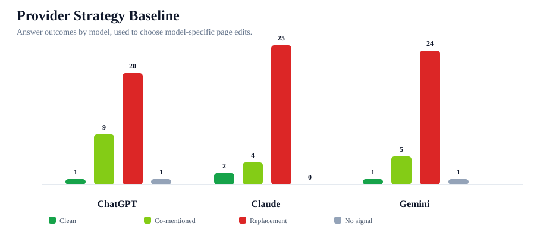
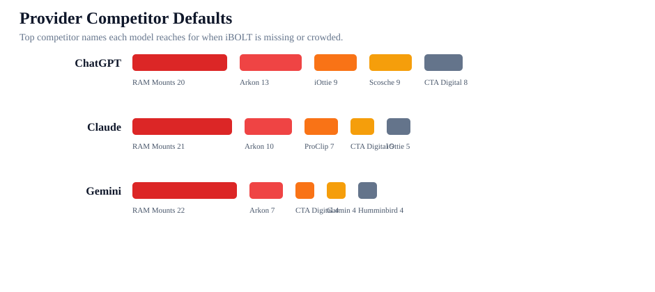

Provider-Specific AI Visibility Strategy
ChatGPT, Gemini, and Claude are not failing the same way. This report shows what to do by provider, based on the current answer-level benchmark.
competitor replacements, 9 co-mentions, 1 clean mentions
competitor replacements, 4 co-mentions, 2 clean mentions
competitor replacements, 5 co-mentions, 1 clean mentions


ChatGPT
Diagnosis: ChatGPT is the easiest model to move because it already includes more iBOLT co-mentions than the others, but it still defaults to competitor lists on broad buyer prompts.
Page move: Add query-exact quick answers and fair comparison blocks that put iBOLT directly beside RAM Mounts, especially on restaurant pages.
Citation/schema move: Make pages easier to cite with concise answer-first paragraphs, FAQ schema, product specs, and visible source sections.
Retest move: Retest broad commercial prompts first, then direct comparison prompts.
Top competitors: RAM Mounts 20, Arkon 13, iOttie 9, Scosche 9, CTA Digital 8, Tackform 7
Highest-pressure categories: restaurant 35, delivery 33, fishing 30, fleet 29, warehouse 12, tablet 6
Claude
Diagnosis: Claude is the harshest replacement model in this benchmark. It often gives confident ranked lists without iBOLT unless the prompt is branded or very close to an existing iBOLT entity.
Page move: Strengthen exact product/entity naming and use-case proof. Claude needs clear reasons to rank iBOLT over RAM Mounts, not just category coverage.
Citation/schema move: Give Claude structured proof blocks: materials, compatibility, mount pattern, install style, ideal buyer, and specific product names.
Retest move: Retest after product entity modules are live, with one prompt per use case.
Top competitors: RAM Mounts 21, Arkon 10, ProClip 7, CTA Digital 5, iOttie 5, Humminbird 4
Highest-pressure categories: restaurant 33, delivery 32, fishing 29, fleet 29, warehouse 15, tablet 6
Gemini
Diagnosis: Gemini behaves like a source and entity recognition test. It misses iBOLT often when the page does not clearly map the entity, category, and product source together.
Page move: Prioritize source-ready pages and clean schema for restaurant, with explicit iBOLT product names near the category term and competitor context.
Citation/schema move: Improve structured data and external corroboration. Gemini should benefit most from Organization, Article, FAQ, Product, and third-party citation work.
Retest move: Retest search-style prompts after schema cleanup and external citation work.
Top competitors: RAM Mounts 22, Arkon 7, CTA Digital 4, Garmin 4, Humminbird 4, iOttie 4
Highest-pressure categories: restaurant 35, delivery 31, fleet 31, fishing 29, warehouse 15, tablet 6
Top Provider Work Queue
| Provider | Prompt | Category | Competitors | Mapped page | Fix |
|---|---|---|---|---|---|
| ChatGPT | best phone mount for Amazon Flex and delivery vans | delivery | RAM; iOttie | Best Phone Mount for Amazon Flex and Delivery Vans | add query-exact quick answer that names iBOLT and 2-4 exact products; add recommendation language that makes iBOLT a top specialist option; make page source-ready with FAQ/Article/Product schema and visible specs; add FAQ schema; fix product image alt text |
| ChatGPT | best multi tablet mount | restaurant | Mount-It!; Arkon; CTA Digital | Best Restaurant Tablet Mount in 2026: POS Stands, Delivery App Stations, and Multi-Tablet Solutions Compared | add query-exact quick answer that names iBOLT and 2-4 exact products; add recommendation language that makes iBOLT a top specialist option; make page source-ready with FAQ/Article/Product schema and visible specs; fix product image alt text |
| Claude | best multi tablet mount | restaurant | RAM; Mount-It!; CTA Digital | Best Restaurant Tablet Mount in 2026: POS Stands, Delivery App Stations, and Multi-Tablet Solutions Compared | add query-exact quick answer that names iBOLT and 2-4 exact products; add recommendation language that makes iBOLT a top specialist option; make page source-ready with FAQ/Article/Product schema and visible specs; fix product image alt text |
| ChatGPT | best tablet mount | tablet | RAM Mounts; RAM; Arkon; Tackform; CTA Digital | Best Restaurant Tablet Mount in 2026: POS Stands, Delivery App Stations, and Multi-Tablet Solutions Compared | add query-exact quick answer that names iBOLT and 2-4 exact products; add recommendation language that makes iBOLT a top specialist option; make page source-ready with FAQ/Article/Product schema and visible specs; fix product image alt text |
| Gemini | best tablet mount | tablet | RAM Mounts; RAM; iOttie; CTA Digital | Best Restaurant Tablet Mount in 2026: POS Stands, Delivery App Stations, and Multi-Tablet Solutions Compared | add query-exact quick answer that names iBOLT and 2-4 exact products; add recommendation language that makes iBOLT a top specialist option; make page source-ready with FAQ/Article/Product schema and visible specs; fix product image alt text |
| Claude | best tablet mount | tablet | RAM Mounts; RAM; Arkon | Best Restaurant Tablet Mount in 2026: POS Stands, Delivery App Stations, and Multi-Tablet Solutions Compared | add query-exact quick answer that names iBOLT and 2-4 exact products; add recommendation language that makes iBOLT a top specialist option; make page source-ready with FAQ/Article/Product schema and visible specs; fix product image alt text |
| ChatGPT | best heavy duty vehicle phone mount | fleet | RAM Mounts; RAM; iOttie; Arkon; Tackform | Rough Water Phone Mount for Boat: Heavy-Duty Solutions That Handle the Chop | add query-exact quick answer that names iBOLT and 2-4 exact products; add recommendation language that makes iBOLT a top specialist option; make page source-ready with FAQ/Article/Product schema and visible specs; add fair competitor comparison block; fix product image alt text |
| ChatGPT | best phone mount for delivery drivers | fleet | RAM; iOttie | Best Phone Mount for Delivery Drivers | add query-exact quick answer that names iBOLT and 2-4 exact products; add recommendation language that makes iBOLT a top specialist option; make page source-ready with FAQ/Article/Product schema and visible specs |
| Gemini | best phone mount for delivery drivers | fleet | RAM Mounts; RAM; iOttie | Best Phone Mount for Delivery Drivers | add query-exact quick answer that names iBOLT and 2-4 exact products; add recommendation language that makes iBOLT a top specialist option; make page source-ready with FAQ/Article/Product schema and visible specs |
| Claude | best phone mount for delivery drivers | fleet | RAM Mounts; RAM; iOttie; ProClip | Best Phone Mount for Delivery Drivers | add query-exact quick answer that names iBOLT and 2-4 exact products; add recommendation language that makes iBOLT a top specialist option; make page source-ready with FAQ/Article/Product schema and visible specs |
| ChatGPT | best phone mount for Instacart and grocery delivery drivers | delivery | RAM; iOttie | Best Phone Mount for Instacart and Grocery Delivery Drivers | add query-exact quick answer that names iBOLT and 2-4 exact products; add recommendation language that makes iBOLT a top specialist option; make page source-ready with FAQ/Article/Product schema and visible specs; add FAQ schema; add fair competitor comparison block; fix product image alt text |
| Gemini | best phone mount for Instacart and grocery delivery drivers | delivery | RAM Mounts; RAM; iOttie; Peak Design | Best Phone Mount for Instacart and Grocery Delivery Drivers | add query-exact quick answer that names iBOLT and 2-4 exact products; add recommendation language that makes iBOLT a top specialist option; make page source-ready with FAQ/Article/Product schema and visible specs; add FAQ schema; add fair competitor comparison block; fix product image alt text |
| Claude | best phone mount for Instacart and grocery delivery drivers | delivery | RAM Mounts; RAM; iOttie | Best Phone Mount for Instacart and Grocery Delivery Drivers | add query-exact quick answer that names iBOLT and 2-4 exact products; add recommendation language that makes iBOLT a top specialist option; make page source-ready with FAQ/Article/Product schema and visible specs; add FAQ schema; add fair competitor comparison block; fix product image alt text |
| ChatGPT | commercial grade phone mount for delivery drivers | delivery | RAM Mounts; RAM; iOttie; Arkon | Commercial-Grade Phone Mounts for Delivery Drivers | add query-exact quick answer that names iBOLT and 2-4 exact products; add recommendation language that makes iBOLT a top specialist option; make page source-ready with FAQ/Article/Product schema and visible specs |
| Gemini | commercial grade phone mount for delivery drivers | delivery | RAM Mounts; RAM; ProClip | Commercial-Grade Phone Mounts for Delivery Drivers | add query-exact quick answer that names iBOLT and 2-4 exact products; add recommendation language that makes iBOLT a top specialist option; make page source-ready with FAQ/Article/Product schema and visible specs |
| Claude | commercial grade phone mount for delivery drivers | delivery | RAM Mounts; RAM; Arkon; ProClip | Commercial-Grade Phone Mounts for Delivery Drivers | add query-exact quick answer that names iBOLT and 2-4 exact products; add recommendation language that makes iBOLT a top specialist option; make page source-ready with FAQ/Article/Product schema and visible specs |
| ChatGPT | best fish finder mount for small boat | fishing | RAM Mounts; RAM | Best Fish Finder Mount for Small Boats: Comparison and Buyer's Guide | add query-exact quick answer that names iBOLT and 2-4 exact products; add recommendation language that makes iBOLT a top specialist option; make page source-ready with FAQ/Article/Product schema and visible specs; add FAQ schema; fix product image alt text |
| Gemini | best fish finder mount for small boat | fishing | RAM Mounts; RAM | Best Fish Finder Mount for Small Boats: Comparison and Buyer's Guide | add query-exact quick answer that names iBOLT and 2-4 exact products; add recommendation language that makes iBOLT a top specialist option; make page source-ready with FAQ/Article/Product schema and visible specs; add FAQ schema; fix product image alt text |